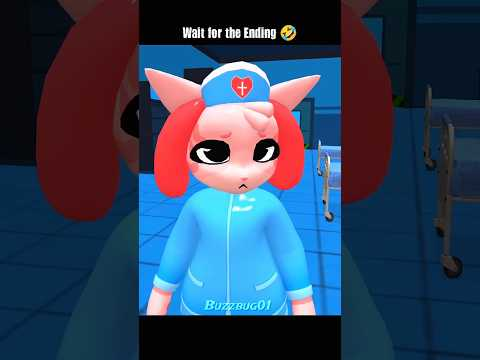

JocAnimal Hospital
4 postări · cele mai noi primele · vezi în blog cu filtre
 TREND SHORTS28 octombrie 2026Animal Hospital
TREND SHORTS28 octombrie 2026Animal Hospital„Nurse love chocolate 😂”: asistenta din Animal Hospital în 9 secunde, ~0,87M vizualizări
Un short de 9 secunde din Animal Hospital, pe ecran împărțit în două: sus, asistenta în prim-plan, cu mâna întinsă; jos, asistenta… TREND SHORTS26 octombrie 2026Animal Hospital
TREND SHORTS26 octombrie 2026Animal HospitalFurios vs calm: trendul de 12 secunde care merge pe Halloween
motion core are un short scurt filmat în Animal Hospital Anomaly, în eventul de Halloween, construit pe contrastul calm vs furios. Copiem…
TREND SHORTS22 octombrie 2026Animal HospitalAsistenta din Animal Hospital: un meme de 7 secunde, „Wait for the Ending”, ~92K pe un canal de 3,8K
Un meme Roblox de 7 secunde cu asistenta din Animal Hospital (Anomaly), cu textul „Wait for the Ending 🤣”, avea ~92K vizualizări și ~22K… CONFIRMAT20 octombrie 2026Animal Hospital
CONFIRMAT20 octombrie 2026Animal HospitalAnimal Hospital (Anomaly) a intrat în eventul de Halloween, cu skin-uri limitate
🔄 UPDATE 25 oct (✅ CONFIRMAT, pagina oficială a eventului): Halloween - Part 2 Sâmbătă, 31 oct, 21:00–22:09 (ora României). Organizator:…